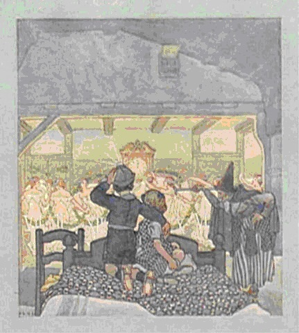

4. Những Con Chữ Khởi Thủy Và Một Áng Văn Rất Sớm Của Loài Người
1. Khám phá khảo cổ.
Tại di chỉ thuộc về thời Đồ đá ở Giả Hồ, nhiều nhà khoa học Trung Quốc thuộc các viện nghiên cứu và trường đại học của Hà Nam, An Huy và Bắc Kinh, cùng tiến sĩ Garman Harbottle (Phòng thí nghiệm quốc gia Brookhaven, New York, Mỹ) đã liên tiếp công bố những khám phá khảo cổ gây chấn động dư luận.
Giả Hồ nằm phía nam trung lưu dòng Hoàng Hà, giữa quốc gia Thương – Ân cổ đại. Thời Xuân Thu Giả Hồ thuộc khu vực tiếp giáp bốn nước Tấn, Tề, Lỗ, Tống. Ngày nay Giả Hồ thuộc tỉnh Hà Nam, chính tâm nước Cộng hòa nhân dân Trung Hoa (theo đường chim bay, cách Bắc Kinh khoảng 400km về phía nam, cách Đông Hải khoảng 300km).

Hình 1: Vị trí của Giả Hồ (Jiahu).
Năm 1999 nhóm nghiên cứu nói trên đã công bố ở tạp chí Nature việc tìm ra nhiều chiếc sáo làm bằng xương ống chân hoặc xương cánh của loài sếu (hạc) đầu đỏ, khoét từ 5 đến 8 lỗ thoát hơi, cỡ 9.000 năm tuổi. Một chiếc sáo còn nguyên vẹn có 7 lỗ, âm vực trải đủ một quãng tám Tây phương, vẫn thổi được, âm thanh của chúng rất hay. Chúng là những nhạc cụ xưa nhất, kỳ diệu nhất mà con người đã được biết và được nghe [1].
Tháng 3 năm 2003, tạp chí Antiquity lại đăng tải một phát hiện quan trọng khác tại Giả Hồ: Những nét khắc trên mai rùa có niên đại cỡ 8.200 đến 8.600 năm có thể là chữ viết tượng hình sớm nhất của nhân loại.
Công cuộc khai quận khảo cổ tại Trung Quốc liên tiếp đánh bại những kỷ lục cũ. Năm 1998 trong hầm mộ vua Scorpion, phía nam Ai Cập, người ta thấy một phiến đất sét chứa những chữ viết nguyên thủy khoảng năm 3.300 đến 3.200 TCN. Cùng thời điểm ấy chữ viết sơ khai của người Sumerians thuộc nền văn minh Mesopotamian cỡ năm 3.100 TCN cũng phát lộ, ký hiệu đó rất gần với hệ thống chữ viết Indus. Năm 1999, đào bới khảo cổ ở Pakistan đã trưng ra những chữ cổ xưa được khắc lên một mảnh lọ gốm trước và sau khi nung. Loại chữ này có niên đại 3.500 TCN, thuộc nền văn minh Harappan hoặc Indus, rực rỡ trong khoảng 2.500 TCN. Và cuối cùng là năm 2000, tại Ashgabat, thủ đô Turkmenistan, người ta đào được một miếng đá dường như đã được dùng làm triện đóng dấu, có khắc chữ. Miếng đá được định tuổi khoảng năm 2.300 TCN, thuộc về một nền văn minh chưa được biết đến, nằm giữa trục đường tơ lụa Á – Âu.

Hình 2: Mảnh gốm có khắc chữ đào được ở Pakistan.
Như vậy các ký tự trên mai rùa tại Giả Hồ thuộc về thời Đồ đá hoặc Đồ đá mới, ít nhất sớm hơn chữ Ai Cập 2.900 năm và sớm hơn chữ tiền Lưỡng Hà - Ấn Độ 2.700 năm.
Các nhà khảo cổ học đã nhận dạng 11 ký hiệu đơn lẻ khắc trên mai rùa. Những chiếc mai được táng cùng thi thể người trong 24 mộ phần, định tuổi bằng đồng vị carbon là từ năm 6.600 đến 6.200 TCN. Nghiên cứu cho thấy ký hiệu này mang những nét tương đồng với chữ viết được dùng hàng ngàn năm sau trong thời nhà Thương (1700 – 1100 TCN), bao gồm: chữ “mục” (mắt), “hộ” (cửa nhỏ, 1 cánh), và các số 1, 2, 8, 10, 20.

Hình 3: Chữ “Mục” (mắt), so với chữ Hán hiện đại (目) vẫn còn sự tương đồng không thể phủ nhận.

Hình 4: Mai rùa có khắc chữ.
2. Ý kiến của các nhà nghiên cứu phương Tây.
“Những gì lộ ra là các ước hiệu mang đầy đủ ý nghĩa, có sự tương thiết với chữ viết cổ Trung Hoa” – Tiến sĩ Harbottle nói. Tuy nhiên ông ta lại trả lời BBC News Online: “Nếu bạn nhặt lên cái chai có đầu lâu xương chéo, ngay lập tức bạn biết đó là thuốc độc, không cần ngôn ngữ thuyết minh. Chúng ta thường ra hiệu để truyền đạt ý niệm và tôi sẽ không ngạc nhiên nếu đó là những gì chúng ta thấy ở đây”. Cũng Harbottle, với Discovery News: “Thật không may chúng ta không thể đoán ở thời điểm này, những ước hiệu nọ biểu thị điều gì. Có thể chúng là chữ viết, có thể chúng là tên gọi các vị thần linh, hoặc không phải. Mãi sau này ở Trung Hoa, các con chữ mới được viết thành câu hỏi gửi đến tiên tổ trên trời, bởi con người, bởi vua chúa.v.v.., để tìm kiếm sự dìu dắt và đoán biết tương lai. Hiển nhiên còn rất nhiều việc phải làm”.
Giáo sư David Keightley (Đại học California, Berkeley, Mỹ) lưu ý về việc liên hệ với chữ viết đời Thương: “Ngắt quãng là 5.000 năm. Thật ngạc nhiên nếu chúng có dây mơ rễ má với nhau.” Ông còn bảo nên chứng minh thấu đáo hơn và “Đây là vấn đề nan giải và là thứ không bình thường. Ký hiệu kia đặc biệt sớm. Chúng ta không thể gọi chúng là chữ viết cho đến khi có nhiều bằng chứng nữa”.
William Boltz, giáo sư tiếng Hoa cổ (Đại học Washington, Seattle, Mỹ) nói qua Discovery News: “Có sự gián cách hơn 5.000 năm… Sao quá trình phát triển chữ viết Trung Hoa diễn ra lâu thế?. Suy diễn dựa trên tương quan hình thể đơn độc, dọc khoảng thời gian dài như vậy, gần như vô nghĩa. Bằng cách nào người ta biết rằng hình nọ trong thực tế là hình con mắt?”. Theo ông nó có thể giống con mắt với người này, nhưng cũng có thể là cái khác với người kia. “Không có một văn cảnh, bao gồm cả sự am hiểu về ngôn ngữ liên quan, không thể nói những dấu hiệu này là chữ viết” – Boltz kết luận.
Bản tin BBC ngày 15.5.2001 nói về việc phát hiện chữ cổ tại Turkmenistan: “Những ký hiệu trên cái triện dấu bằng đá có thể có quan hệ với Trung Hoa xa xưa, nhưng Trung Hoa không được tin là đã phát triển được chữ viết ở thời điểm vật dụng kia ra đời”. Kết luận rất chủ quan của BBC, rất lạ, hình như quán xuyến một định kiến cứng nhắc xuyên suốt trong quan niệm của nhiều chuyên gia khảo cổ và ngôn ngữ hàng đầu trời Tây. Điều này được chứng minh bằng sự dè dặt và hồ nghi của những người được hỏi ý kiến, hai năm sau đó, khi di vật tại Giả Hồ xuất lộ. Hơn thế nữa, sự dè dặt của họ chứa đựng những mâu thuẫn và sơ hở đáng ngờ.
Harbottle, người cộng tác với nhóm chuyên gia Trung Quốc nói ngược nói xuôi đều… xuôi. Một người Trung Hoa bình thường nhất cũng có thể giải thích để Keightley hết ngạc nhiên: hơn 3.000 năm từ thời Thương – Ân, tiếng Hoa hiện đại vẫn còn rất nhiều từ không thay đổi chút nào, chữ “mộc” và chữ “khẩu” là ví dụ rõ nhất. Trong ý nghĩa nào đó của sự tương đối, 5.000 năm từ thời Đồ đá mới đến Thương – Ân chưa chắc đã dài bằng 3.000 năm tiếp liền sau. Câu hỏi của Boltz thì Voltaire đã trả lời từ thế kỷ thứ 18: “Chúng ta nhận thấy rằng quốc gia ấy tồn tại một cách rực rỡ từ trên 4.000 năm rồi mà luật pháp, phong tục, ngôn ngữ, cách ăn mặc vẫn không thay đổi bao nhiêu” [2]. Những đòi hỏi có phần quá khắt khe, nhằm đưa đến kết luận rõ ràng rằng các ký hiệu kia là chữ viết, vô hình chung phủ nhận tất cả khám phá khảo cổ có liên quan đến chữ viết trước đó, không riêng gì ở Trung Quốc.
3. Áng văn bất hủ.
Thái độ bình tĩnh và nhún nhường của người Trung Quốc trong trường hợp này rất đáng nể. Đứng đầu đoàn chuyên gia Tây – Tàu, giáo sư Trương Cư Trung đã công bố thành quả lao động của họ trên tạp chí Antiquity, với một câu hỏi làm tựa đề: “Chữ viết sớm nhất chăng? Ký hiệu sử dụng ở thiên niên kỷ thứ 7 trước công nguyên tại Giả Hồ, tỉnh Hà Nam, Trung Quốc”.
Nhóm nghiên cứu của giáo sư Trương tại Hà Nam không phải nhóm duy nhất đang khai mở lịch sử chữ viết Trung Hoa. Tại Tây An, nằm sâu 3,5m dưới di chỉ đồ đá mới Bán Pha (niên đại 6.000 đến 7.000 năm), là làng Bán Pha 2 ít người biết, cổ kính hơn nhiều (12.000 năm). Các vật tạo tác tìm được tại đó, đã mơ hồ cho thấy hình như xã hội của cả hai làng Bán Pha ít nhiều mang dấu tích mẫu hệ trong tổ chức xã hội. Không xa Bán Pha, ở làng Đào Tự, Tương Viên, Sơn Tây, một bức tường thành dài khoảng 130 mét, nằm theo hướng Đông – Tây cũng vừa lộ diện. Nhiều chuyên gia dự đoán nó thuộc về thời đại Nghiêu – Thuấn – Vũ trong huyền thoại.
Một chiếc bình thuộc Bán Pha 2, dính một ít cặn giống như cặn trà đã được đào lên. Mặt ngoài chiếc bình có khắc một câu chuyện bằng chữ tượng hình cổ đại Trung Hoa. Loại chữ này mang tính ẩn dụ cao, có nhiều dị biệt so với kiểu chạm khắc làm nên nền tảng ngôn ngữ Trung Hoa hiện đại. Tiến sĩ Jeff Schonberg (Đại học Angelo State University, San Angelo, Texas, Mỹ), cố vấn tại công trường khai quật Bán Pha 2 gọi kiểu truyện này là “văn hóa phổ quát”. Ông nghĩ nó giống như truyện Adam, Noah, Abraham và Frankenstein của các nền văn minh khác.
Câu chuyện trên chiếc bình được tạm giải mã như một bài học đạo đức, nói về sự cư xử không phải phép, theo ngôn ngữ hôm nay là kiêu ngạo: “Thuở ấy thế giới đảo lộn chìm đắm trong kỷ nguyên bóng tối bởi con người cư xử tồi tệ và xúc phạm thần nước. Hậu quả là xã hội hỗn loạn và nhiều người bị bệnh. Họ tìm đến thần núi, ông này hiểu rõ sự sai lầm và nổi giận. Con người bắt buộc phải bước vào hành trình tìm thuốc chữa bệnh. Trên mỏm núi rất xa nọ, họ sẽ thấy một loài cây. Họ phải đem về và chế biến thành trà để uống. Sự tha thứ và hàn gắn sẽ diễn ra, bóng tối sẽ bị xua đi”.
Thật lạ lùng là cốt truyện này vẫn được lưu giữ giữa lời truyền khẩu dân gian và ký ức của con người Tây An, tỉnh Thiểm Tây, Trung Quốc hôm nay. Phải chăng nền giáo dục tân kỳ, văn minh khoa học và kỹ thuật số của thế giới hiện đại đang nằm trên con đường tiệm cận hành vi “kiêu ngạo”. Bài học tinh thần cổ điển dường như còn rất mới. Dọc dài thời gian và sự phát triển của nhân loại từ quá khứ đến tương lai, áng văn xa xưa ấy mãi mãi hàm mang giá trị nhân văn bất khả diệt và cần được suy tư nâng niu [3]. Trước ngưỡng cảnh môi trường trái đất đang bị tàn phá nặng nề, xã hội loài người xáo trộn bởi những căn bệnh vô tiền khoáng hậu như ung thư, aids, chia rẽ, kỳ thị, khủng bố, giết người hàng loạt… câu chuyện kia phải được xem như lời cảnh tỉnh chân thành. Kỳ vọng lắm cho tất cả chúng ta, mỗi khi nâng chén trà lên môi thưởng thức, sẽ thấy áng văn bất hủ nọ sóng sánh giữa tâm hồn, sẽ hình dung ra một con thuyền nan tròng trành dưới đáy cốc đang chở Trương Chi và giọng hát ngọt ngào của chàng đến bến bờ chân thiện.

Hình 5: Bán Pha, di chỉ đồ đá mới (5.000 đến 7.000 năm). Âm 3.5m dưới đất là Bán Pha 2 (niên đại 12.000 năm).
Khi tôi liên lạc trực tiếp với giáo sư Trương Cư Trung, để hỏi về sự chính xác của thông tin mà tiến sĩ Jeff Schonberg đề cặp trong một hội thảo tại Mỹ, ông Trương khẳng định: cách nay 12 ngàn năm Trung Quốc chưa thể có chữ viết. Chỉ chắc chắn rằng chiếc bình trà nọ có niên đại từ 5.000 năm trở lên, tất cả dữ kiện khảo cổ về chữ viết khắp nơi tại Trung Quốc đang được đối chiếu, liên hệ, phân tích và sẽ sớm công bố ở tương lai gần.
4. Kết luận.
Không nghi ngờ gì nữa, những đường nét rất gần với ký tự tại Giả Hồ có nền tảng vững vàng nhất, so với các chữ sơ khai khác ở Ai Cập, Lưỡng Hà, Pakistan và Turkmenistan. Nền tảng ấy chính là văn minh Trung Hoa chưa một ngày đứt gãy, từ thuở các di vật kia được chế tác đến nay. Địa điểm Giả Hồ bao gồm rất nhiều ngôi mộ cổ, nhiều dấu tích cư dân rất xưa và di chỉ khảo cứu, chắc chắn còn để dành sự bất ngờ rất lớn cho mai sau. Việc đào bới chỉ mới tiến hành trên một diện tích khá bé mà đã thấy 45 nền nhà, 370 kho hầm, 349 mộ phần, 9 lò nung gốm, cùng hàng ngàn vật dụng (từng được sử dụng cho nghi thức cúng tế, sinh hoạt và làm đồ trang sức) bằng xương cầm thú, gốm, đá và các chất liệu khác. Có thể nói, toàn bộ mảnh đất Trung Hoa hiện đại đang là một công trường khảo cổ vĩ đại. Tin tức báo chí mấy năm gần đây dồn dập chỉ ra bao nhiêu dấu vết con chữ sơ khai ở Sơn Đông, An Dương (cũng thuộc Hà Nam), An Huy, Triết Giang.
Thật ra sự “dè dặt và hồ nghi” mang nhãn hiệu Âu – Mỹ đã nêu rất dễ hiểu. Bao trùm lên những tranh luận “đây có phải chữ viết hay không”, là cả một vấn đề ở tầm vĩ mô mang tên “văn hóa” và “văn minh”. Nếu người Trung Quốc chứng thực được họ có nền văn minh sớm nhất nhân loại, có nền văn hóa duy nhất của hành tinh phát triển liên tục hàng chục ngàn năm nay, thì tri thức về ngày hôm qua của loài người ở thế kỷ 21 phải được tái thẩm định và sắp đặt lại. Hệ quả là thật khó phủ nhận những giá trị khu biệt và tiên phong của Á Đông. Giá trị ấy đã chiến thắng khoảng thời gian khắc nghiệt dằng dặc, sẽ đem đến cho người Á Đông niềm tin vô bờ bến để soi rọi, khẳng định mình trước tương lai.
Trung Thu 2004
--------------------------------------------------------------------Thư tịch và chú thích:
Antiquity Tập 77, số 295, tháng 3 năm 2003, The earliest writings? Sign use in the seventh Millennium BC at Jiahu, Henan Province, China, by Xueqin Li, Garman Harbottle, Juzhong Zhang (Trương Cư Trung), Changsui Wang.
www.chinacsw.com/cszx/xian/lishi.htm
http://english.peopledaily.com.cn
www.geocities.com/cvas.geo/china.html
http://news.bbc.co.uk/1/hi/sci/tech/454594.stm
http://news.bbc.co.uk/2/hi/science/nature/2956925.stm
http://news.bbc.co.uk/2/hi/asia-pacific/1330705.stm
http://dsc.discovery.com/news/briefs/20030421/writing.htm
[1] Có thể nghe tiếng sáo 9 ngàn năm trước tại đây: http://news.bbc.co.uk/olmedia/450000/audio/_454594_flutes.ram
[2] Voltaire, Khảo luận về phong tục, Will Durant dẫn trong “Lịch sử văn minh Trung Hoa”, Nguyễn Hiến Lê dịch, NXB VH-TT 1997.
[3] Ở góc độ nào đấy, ngọn núi có cây trà kia chính là Núi thiêng, là Linh sơn của nền văn hóa Trung Hoa. Cuộc giải mã cổ tự diễn ra sau khi tiểu thuyết Linh Sơn của Cao Hành Kiện (Nobel 2000) được viết. Hai bộ khung ý tưởng cùng một nguồn mạch văn minh Trung Hoa, cách nhau nhiều ngàn năm, mang nét tương đồng đến ngạc nhiên. Bạn đọc có thể tham khảo thêm bài viết về tác phẩm Linh Sơn của tôi trong cùng thư mục.
……………….
Về bản quyền bài này: Nội dung ở đây được sửa chữa từ bản đã xuất hiện trên tạp chí talawas, 10.2004.
Về bản quyền chung: Tất cả các bài tạp văn kí tên Trương Thái Du dưới 30 ngàn chữ đều được tác giả để ở chế độ bản quyền mở. Mọi cá nhân hoặc tổ chức có thể tải về miễn phí từ vnthuquan.net. Các hình thức sử dụng đuợc chấp nhận rộng rãi: trích dẫn, in trên báo, in thành sách, tái lưu trữ ở các loại “diễn đàn” hoặc kho sách điện tử khác.v.v.. Xin miễn sửa đổi hoặc biên tập thêm. Tác giả chỉ chịu trách nhiệm bản thảo tại kho sách vnthuquan.net với các phiên bản tu chỉnh sau ngày 01.01.2006.